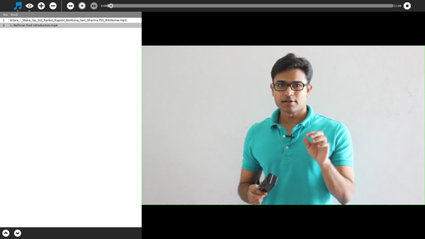
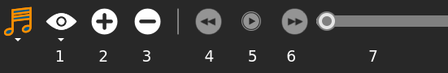

Jukebox¶
About¶
Jukebox is the media player to play different kinds of audio and video files including online streams. It also supports playlists like .m3u and .pls.
Where to get Jukebox¶
Jukebox is included in the standard releases of the OLPC software. If for some reason Jukebox is not installed, it can be downloaded from its Activity page
Using¶
Across the lower area, you can see the videos and if being the corresponding option checked will also appreciate the playlist, and at the top, there are options to control the flow, and how to view the current track
Two major playlist file support added, if there are more than one song in the list then users can use previous/next buttons to go to different songs.

If you want to watch your favourite video full-screen click on the full-screen button.
The Toolbars¶

Expand visual options.
Load news tracks.
Remove actual track.
Previous track.
Play/Pause actual track.
Next track.
Control the track progress
More about Jukebox¶
If you open more than one media file, Jukebox will save a “play list” with all the files you selected. Then you can create list by topics, and open all the files later just selecting the list saved in your Journal.
You can open files located in external devices like a usb device, from Jukebox, without copying them in the Journal, that is really useful if the files are too big.
Where to report problems¶
Please report bugs and make feature requests at jukebox-activity/issues.
Credits¶
Andy Wingo, Dan Williams, Kushal Das